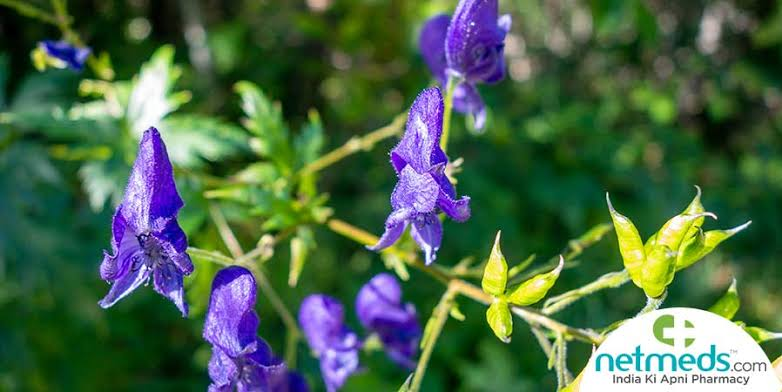

Basonym of Drug
Ativisha
Main Synonym
- Visha
- Vishwa
- Shrungi
- Prativisha
- Aruna
- Shuklakanda
- Bhangura
- Ghunavallabha
- Upavisha
Regional Name
- Bengali: Ataicha
- Gujarati: Ativakh ni kali
- Hindi: Atees
- Kannada: Ativisha
- Tamil: Ativadayam
- English: Indian Atees
Botanical Name
Aconitum heterophyllum Wall.
Family
Ranunculaceae
Classification (Gana)
- Acharya Charaka mentioned Atibala in Lekhaniya, and Arshoghna Mahakashaya; and Tikta Skandha, and Sirovirechaniya Dravyas.
- Acharya Sushruta and Vagbhata mentioned in Pippalyadi, Mustadi, and Vachadi Ganas.
- Bhavprakash Nighantu mentioned in Haritakyadi Varga.
External Morphology
60-120 cm high herb
Useful Parts
Tuberous root
Important Phytoconstituent
Aconitic acid, Atisine
Rasa Panchak
- Rasa: Katu, Tikta
- Guna: Laghu, Ruksha
- Virya: Ushna
- Vipaka: Katu
Action
Kaphapittahara
Therapeutic Indication
- Deepen (increase appetite)
- Krumihara (antihelmintic)
- Pachan (digestive)
- Arshoghna (treat piles)
- Jwarahara (anti-pyretic)
- Kasahara (anti-cold/cough)
Therapeutic Uses
- Krumighna - With Vidanga powder is useful as antihelmintic.
- Vishghna - Root powder early in the morning useful in rat-bite/poison.
- Grahani - Decoction made with Ativisha, Kutaja, and Musta is useful in irritable bowel syndrome symptoms.
- Atisara - Ativisha with Bhanga, and Vacha powder are useful to treat diarrhea.
Dose
Root powder - 1-3 gm/day
Formulations
- Balchaturbhadra
- Chaturbhdravaleha
- Ativishavaleha
- Hriberadi Kashaya
Adverse Effect
Not Known